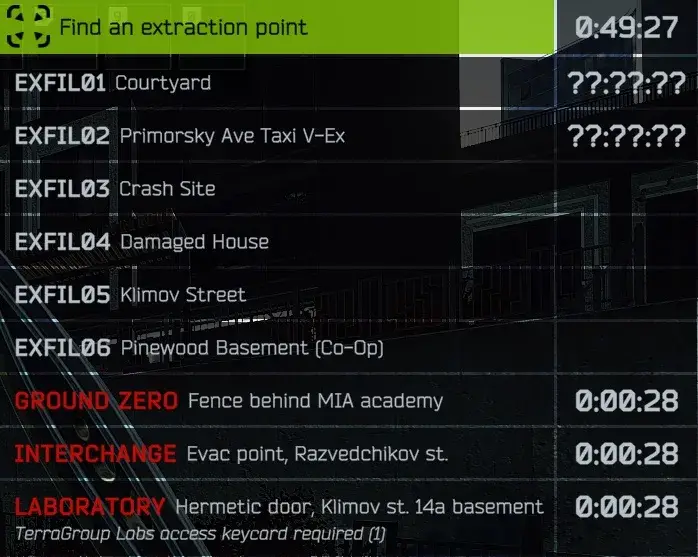

Verbose Transits
- Downloads
- 3,360
- Favourites
- 1
- Mod lists
- 4
Updated to 1.0.4 - compatibility for 3.11. New transits. Typo fix in variable assignment to fix CN text in EN version.
What is Verbose Transits precisely?
Verbose Transits is a very small mod that adjusts RU and EN locales for map transits based on Big Silly Goose’s approach to all the usual EXFIL’s. Basically…
- It changes EXFIL base text to destination location.
- The description is more in line with usual descriptions.
Example of new transit descriptions for Streets of THE CITY below:

I did not do extensive testing of the mod. Presumably, I didn’t miss anything, and every transit should be covered by it. Lab’s transit description above must be the longest out of all. The exfil list wraps around text, so no clunky stuff here.
Make sure to let me know if you are facing any issues. Cheers.
--
Special thanks goes to contributors of this small mod:
- jiaybear - CN translation.
Version
1.0.4
This version is for SPT 3.11.
- Fixed CH entry used in EN version of the mod.
Version
1.0.3
This version is for SPT 3.11.
- Upped to 3.11
- Added 1 new Customs entry
- Added 1 new Woods entry and edited two existing
Version
1.0.1
This version is for SPT 3.10
- CN translation added.
Version
1.0.0
This version is for SPT 3.10 (I think)
- Initial commit
VirusTotal + Kaspersky checks are clear, MS Defender gives false positive on my mod. Check comments for related discussion.